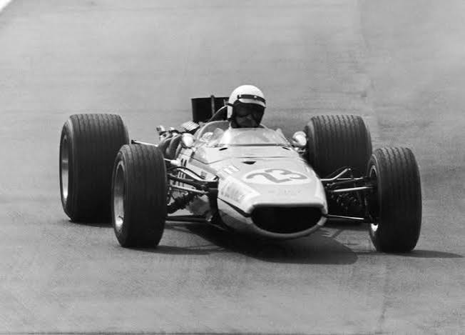
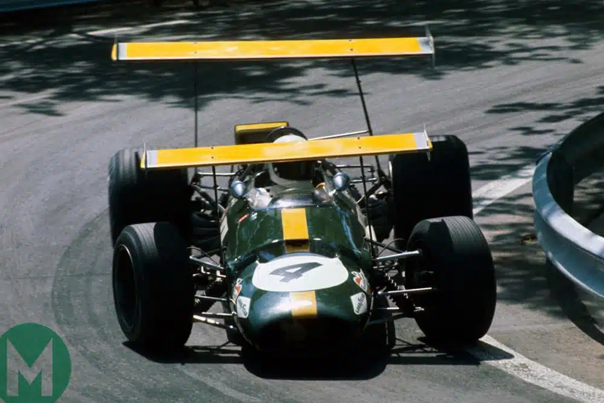
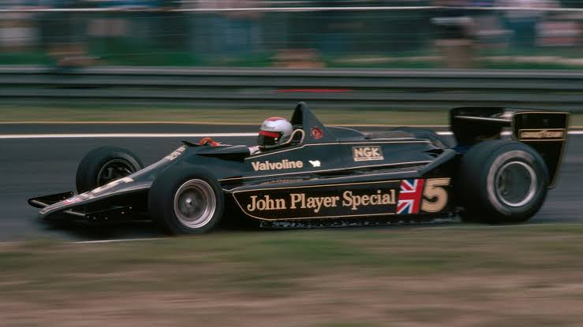
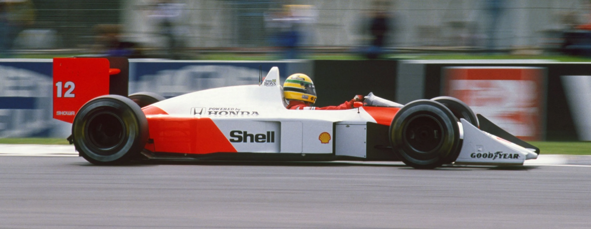
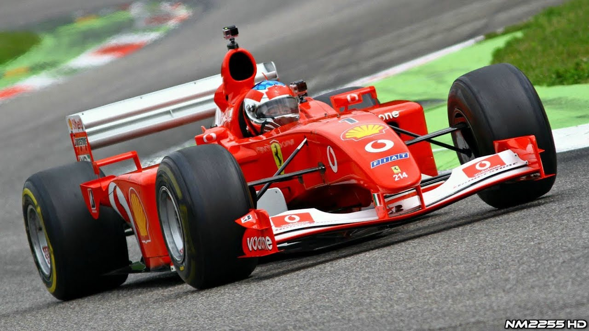
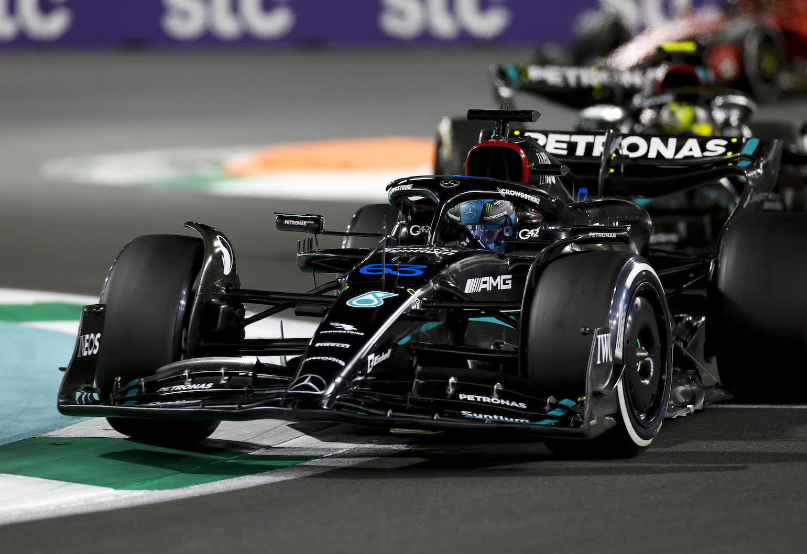
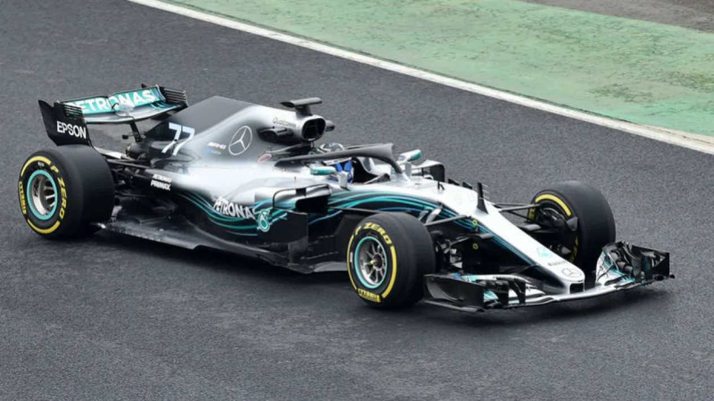

1. Era Mesin Depan & Silinder Klasik (1950–1959)

Pada dekade pertama kejuaraan dunia, mobil F1 mengadopsi arsitektur mobil balap pra-perang dengan bodi berbentuk cerutu memanjang dan gril radiator besar di bagian depan.
- TATA LETAK DAN KARAKTERISTIK
Mesin ditempatkan di bagian depan pengemudi, membuat kap mesin panjang dan distribusi bobot cenderung berat ke depan sehingga mobil sering mengalami understeer.
- AERODINAMIKA DAN BAN
Belum ada perangkat sayap sama sekali; mobil hanya mengandalkan cengkeraman mekanis dari ban profil tipis berpola alur seperti ban jalan raya.
- KESELAMATAN / SAFETY
Kokpit terbuka sangat lebar tanpa sabuk pengaman maupun roll hoop, dan pembalap hanya mengenakan helm berbahan gabus atau kulit tanpa pelindung tahan api.
2. Revolusi Mesin Tengah & Sayap Awal (1960–1976)

Tim Cooper mengubah wajah F1 secara permanen pada akhir 1950-an dengan meletakkan mesin di belakang kokpit, yang terbukti jauh lebih lincah di tikungan dan langsung ditiru seluruh tim mulai tahun 1960.
- MUNCULNYA SAYAP AERODINAMIKA
Pada musim 1968, Lotus dan Ferrari mulai memasang sayap terbalik di atas suspensi untuk menciptakan gaya tekan ke bawah (downforce), memicu eksperimen sayap super tinggi sebelum akhirnya dibatasi FIA demi keamanan.
- SPONSOR DAN DESAIN BODY
Bentuk mobil berubah dari silinder menjadi lebih kotak dengan bagian hidung meruncing dan airbox (corong udara) menjulang tinggi di atas kepala pembalap untuk memasok udara ke mesin 3.0L V8 atau Flat-12.
- KESELAMATAN AWAL
Sabuk pengaman enam titik, baju balap tahan api, serta roll bar di belakang kepala mulai diwajibkan menyusul meningkatnya kecepatan tikungan.
3. Era Ground Effect & Monokok Serat Karbon (1977–1982)

Insinyur Lotus menemukan bahwa udara yang mengalir di bawah mobil dapat dimanfaatkan untuk menyedot sasis menempel ke aspal tanpa menambah hambatan udara (drag) berlebih.
- PRINSIP GROUND EFFECT
Melalui mobil legendaris Lotus 78 dan Lotus 79, bagian bawah sidepod dibentuk menyerupai terowongan Venturi terbalik yang dilengkapi tirai geser (sliding skirts) di sisi samping agar tekanan udara rendah di kolong mobil tidak bocor.
- SASIS SERAT KARBON
Pada tahun 1981, McLaren MP4/1 memperkenalkan sasis monokok penuh berbahan komposit serat karbon yang menggantikan pelat aluminium, menghasilkan struktur yang jauh lebih kaku dan tahan benturan.
- TANTANGAN FISIK
Gaya gravitasi (G-force) di tikungan melonjak drastis hingga membuat pembalap kesulitan bernapas, sehingga FIA melarang lantai berterowongan dan mewajibkan dasar lantai rata (flat bottom) mulai musim 1983.
4. Era Monster Turbo Pertama (1983–1988)

Dengan diberlakukannya lantai datar yang memangkas downforce, para pabrikan mengalihkan fokus pada tenaga mesin murni menggunakan induksi paksa (turbocharger) bertekanan tinggi.
- TENAGA BRUTAL
Mesin berkapasitas kecil 1.500 cc dari Renault, BMW, Honda, dan Ferrari mampu memuntahkan tenaga sekitar 900 hingga 1.000 dk saat balapan, dan menembus lebih dari 1.300 dk dalam setelan kualifikasi khusus.
- KARAKTER BERKENDARA
Mobil era ini memiliki gejala turbo lag yang ekstrem—tenaga meledak secara tiba-tiba di tengah tikungan—dan masih menggunakan transmisi manual H-pattern yang menuntut keahlian tinggi.
- DOMINASI DAN LARANGAN
Puncak era ini ditutup oleh McLaren MP4/4 bermesin Honda V6 Turbo pada 1988 yang memenangkan 15 dari 16 seri balapan sebelum mesin turbo dilarang sementara untuk menekan biaya dan kecepatan.
5. Era Naturally Aspirated V10/V8 & Elektronik Tinggi (1989–2013)

Setelah pelarangan turbo, F1 memasuki era keemasan mesin atmosferik (naturally aspirated) dimulai dari konfigurasi 3.5L V12/V10, turun ke 3.0L V10, hingga 2.4L V8 dengan putaran mesin melengking mencapai 19.000–20.000 RPM.
- REVOLUSI ELEKTRONIK DAN AERODINAMIKA
Awal 1990-an diramaikan fitur canggih seperti suspensi aktif, transmisi semi-otomatis paddle shift, dan kontrol traksi, sementara pada dekade 2000-an bodi mobil dipenuhi sirip kecil (bargeboard dan winglets) untuk mengarahkan aliran udara.
- REFORMASI KESELAMATAN 1994
Tragedi yang menewaskan Ayrton Senna dan Roland Ratzenberger memicu perombakan besar, termasuk meninggikan dinding samping kokpit, memperketat uji tabrak, dan memperkenalkan penyangga leher HANS pada 2003.
- HADIRNYA KERS DAN DRS
Pada akhir era ini (2009–2011), F1 memperkenalkan sistem pemulih energi kinetik (KERS) dan sayap belakang buka-tutup DRS (Drag Reduction System) untuk mempermudah aksi salip-menyalip.
6. Era Turbo-Hybrid & Perangkat Halo (2014–2025)

Regulasi tahun 2014 memulai babak baru efisiensi bahan bakar melalui unit daya (power unit) 1.6L V6 Turbo-Hybrid paling kompleks dalam sejarah otomotif.
- SISTEM HYBRID GANDA
Mesin pembakaran dalam dipadukan dengan dua motor listrik—MGU-K (pemulih energi pengereman) dan MGU-H (pemulih energi panas gas buang)—yang menghasilkan total tenaga sekitar 1.000 dk dengan efisiensi termal di atas 50%.
- PERLINDUNGAN KOKPIT HALO
Mulai musim 2018, FIA mewajibkan pemasangan struktur pelindung kepala berbahan titanium berbentuk huruf Y bernama Halo di atas kokpit, yang terbukti menyelamatkan banyak nyawa pembalap dari benturan keras.
- REVOLUSI BAN 18 INCI (2022-2025)
Pada 2022, desain mobil dirombak dengan mengembalikan terowongan ground effect modern dan mengganti ban 13 inci menjadi 18 inci berprofil tipis untuk mengurangi turbulensi udara kotor (dirty air) di belakang mobil.
7. Era Active Aerodynamics & Elektrifikasi 50:50 (2026–Sekarang)

Mulai musim 2026, F1 menerapkan konsep mobil yang lebih lincah (nimble car) dengan dimensi wheelbase lebih pendek, bodi lebih ramping, dan bobot minimum turun sekitar 30 kg dibanding generasi sebelumnya.
- KESEIMBANGAN TENAGA 50:50
Komponen MGU-H yang mahal dihapuskan, sementara daya motor listrik MGU-K ditingkatkan hampir tiga kali lipat menjadi 350 kW (sekitar 470 dk), menciptakan pembagian tenaga yang nyaris seimbang antara mesin bensin (dengan bahan bakar sintetis 100% berkelanjutan) dan tenaga listrik.
- SISTEM ACTIVE AERO
Sayap belakang DRS tradisional digantikan oleh aerodinamika aktif pada sayap depan dan belakang secara bersamaan, yang memiliki mode tikungan (Corner Mode) untuk downforce maksimal dan mode lintasan lurus (Straight Mode) untuk memangkas hambatan udara.
- OVERTAKE MODE
Sebagai pengganti fungsi salip dari DRS, pembalap yang berada dalam jarak satu detik di belakang lawan mendapatkan tambahan pasokan daya listrik ekstra untuk melakukan manuver menyalip.